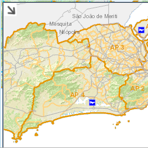
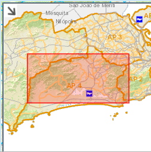

Visão Geral (minimapa)
A ferramenta Visão Geral (Overview) encontra-se no canto inferior direito da aplicação.
Está representada pelo símbolo Seta.
Ao clicar sobre o símbolo, uma pequena janela é aberta exibindo um trecho macro do mapa.

